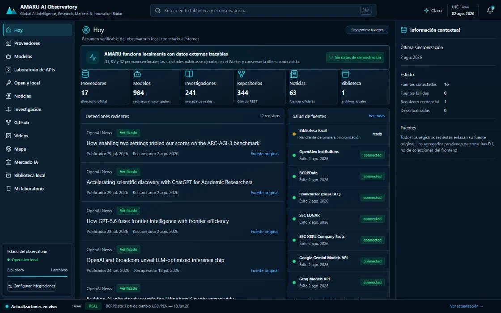
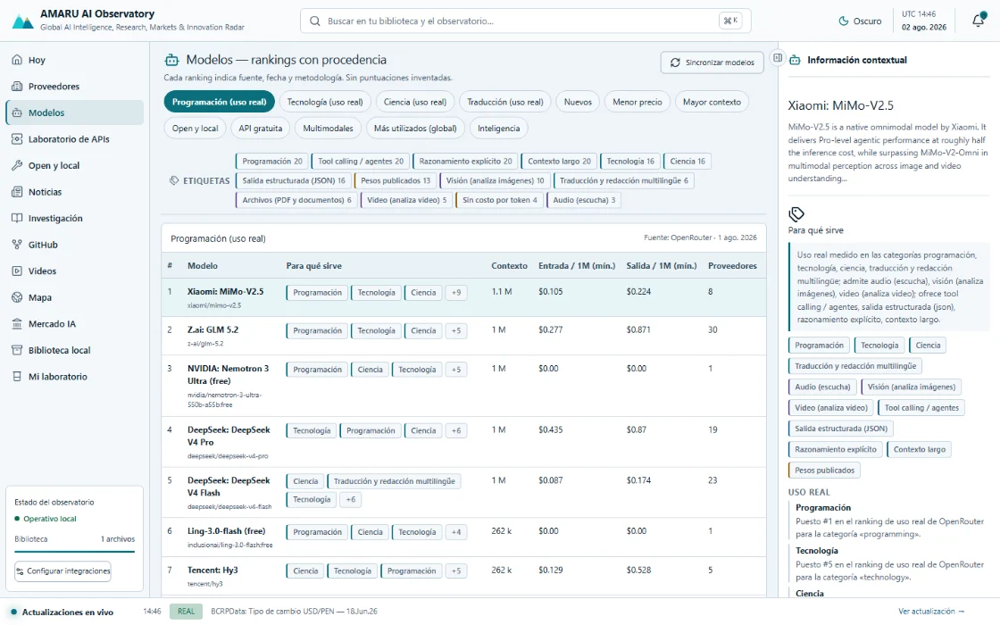
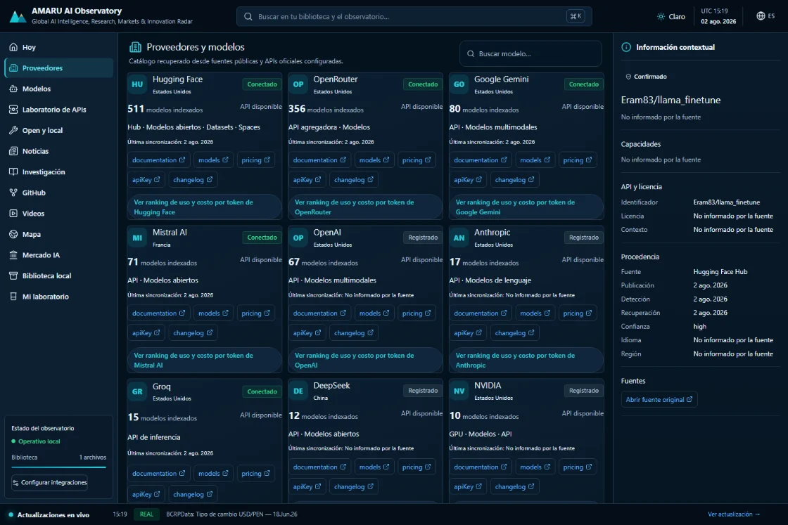
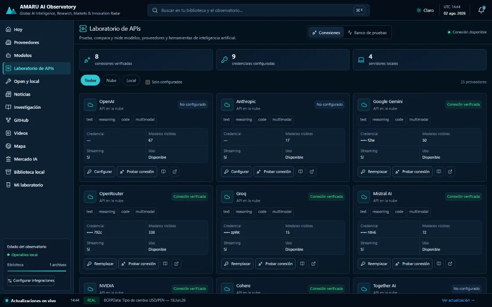
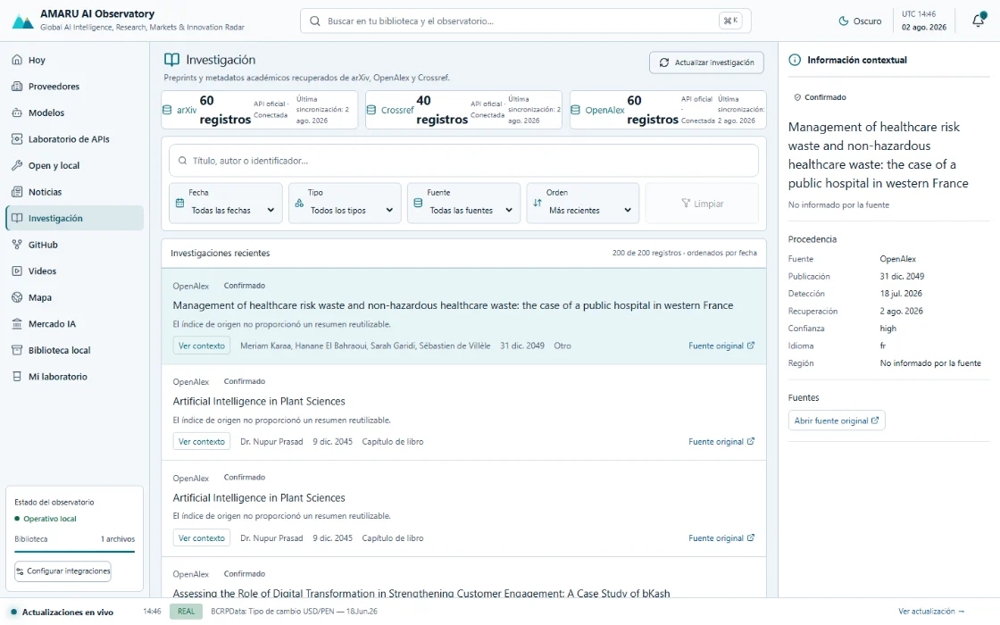
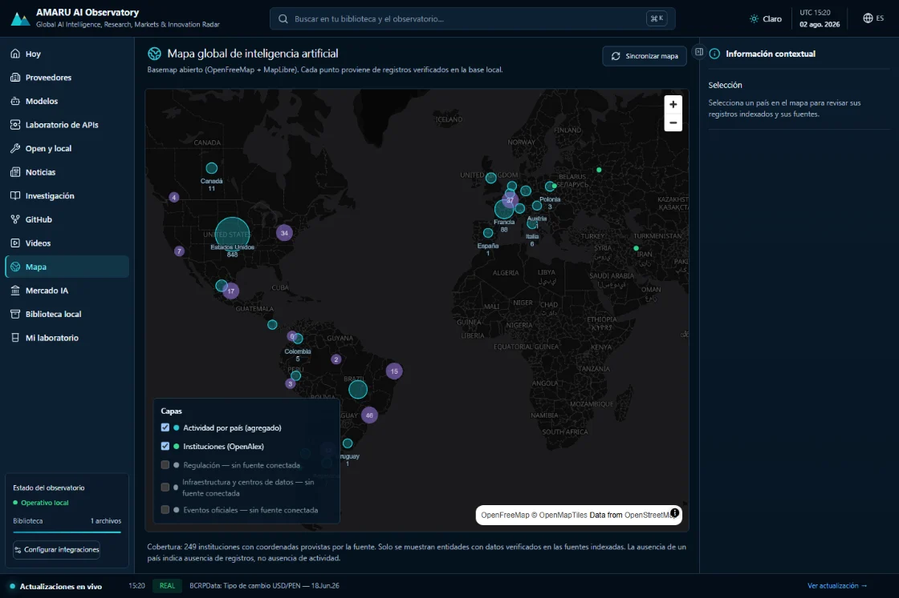
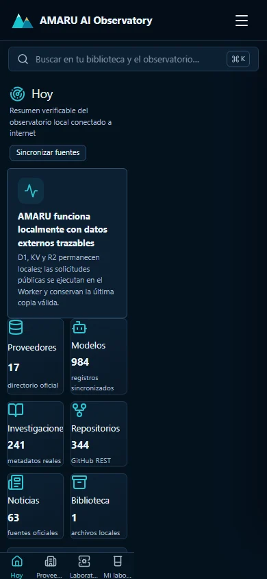

AMARU recupera datos públicos de IA — proveedores, modelos, precios por token, investigación, repositorios y mercado — los normaliza en un Worker de Cloudflare que corre en tu propia máquina y los guarda en una base local. Cada cifra en pantalla conserva su fuente, su fecha y su metodología.
Capturas reales de la aplicación en ejecución local, con datos sincronizados desde fuentes públicas. Sin maquetas ni datos de relleno.







Cada módulo consume exclusivamente fuentes registradas y verificables. Cuando falta información, la interfaz lo declara en lugar de inventarla.
Resumen verificable de todo lo sincronizado y el estado de cada fuente.
Directorio de proveedores; cada tarjeta abre su ranking de uso real y su costo por token.
Rankings con procedencia, etiquetas de capacidad, búsqueda por etiqueta y precio por cada proveedor que aloja el modelo.
Banco de pruebas con ejecución real: texto, razonamiento, código, imágenes y video.
Modelos abiertos y ejecución local: Ollama, LM Studio, vLLM y LocalAI detectados automáticamente.
Fuentes oficiales y changelogs, con botón de actualización en el contexto actual.
Preprints y metadatos vía arXiv, OpenAlex y Crossref, con filtros por fecha, tipo y fuente.
Repositorios y canales oficiales, ordenados con metodología declarada.
Actividad global a partir de coordenadas de instituciones publicadas por OpenAlex.
Presentaciones SEC EDGAR/XBRL e indicadores económicos.
Tus propios documentos, analizados sin salir de tu equipo.
Alternativas de arquitectura con costos calculados desde precios indexados.
.wrangler/state. Ningún script del proyecto despliega nada..dev.vars, ignorado por git, y solo el Worker las usa.Requiere Node.js 24 y pnpm 10. No hace falta ninguna clave de API para las fuentes públicas.
# clonar e instalar git clone https://github.com/oprbguitar/repositoryAmaru.git cd repositoryAmaru pnpm install # estado local y arranque pnpm db:migrate:local pnpm db:seed:local pnpm dev # http://127.0.0.1:5174
Esta misma página se puede abrir sin conexión desde el repositorio:
docs/index.html. Usa rutas relativas, así que funciona igual
servida por GitHub Pages o abierta directamente desde el disco.
AMARU se distribuye bajo la Licencia Apache, Versión 2.0: puedes usarlo, modificarlo y redistribuirlo, incluso comercialmente, conservando el aviso de licencia y declarando los cambios relevantes. El texto legal se incluye íntegro y sin modificar en el repositorio.
Código fuente, guía de instalación y notas de arquitectura en el README del proyecto.
Texto completo y verbatim, más el resultado de la revisión de licencias de las dependencias de producción (todas permisivas y compatibles).